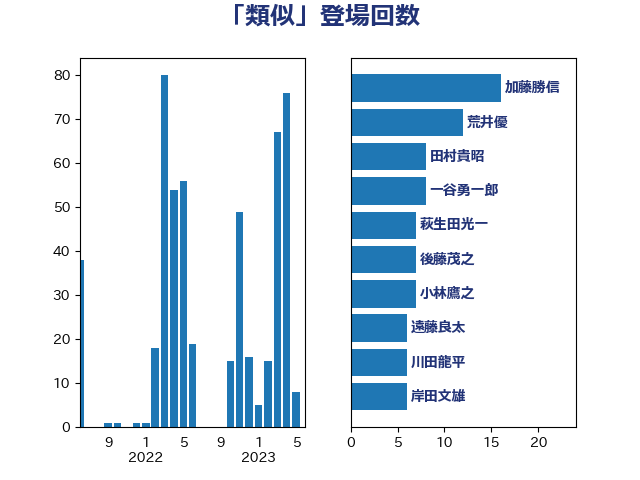

単語「類似」

| 加藤勝信 | 自由民主党 | 16 回 |
| 荒井優 | 立憲民主党 | 12 回 |
| 田村貴昭 | 日本共産党 | 8 回 |
| 一谷勇一郎 | 日本維新の会 | 8 回 |
| 萩生田光一 | 自由民主党 | 7 回 |
| 後藤茂之 | 自由民主党 | 7 回 |
| 小林鷹之 | 自由民主党 | 7 回 |
| 遠藤良太 | 日本維新の会 | 6 回 |
| 川田龍平 | 立憲民主党 | 6 回 |
| 岸田文雄 | 自由民主党 | 6 回 |
| 山田太郎 | 自由民主党 | 6 回 |
| 松本剛明 | 自由民主党 | 5 回 |
| 松原仁 | 立憲民主党 | 5 回 |
| 本村伸子 | 日本共産党 | 5 回 |
| 安江伸夫 | 公明党 | 5 回 |
| 野田聖子 | 自由民主党 | 4 回 |
| 柴田巧 | 日本維新の会 | 4 回 |
| 林芳正 | 自由民主党 | 4 回 |
| 大石あきこ | れいわ新選組 | 4 回 |
| 堀場幸子 | 日本維新の会 | 4 回 |
| 野村哲郎 | 自由民主党 | 3 回 |
| 西村康稔 | 自由民主党 | 3 回 |
| 西岡秀子 | 国民民主党 | 3 回 |
| 緑川貴士 | 立憲民主党 | 3 回 |
| 石川博崇 | 公明党 | 3 回 |
| 浅野哲 | 国民民主党 | 3 回 |
| 梅村みずほ | 日本維新の会 | 3 回 |
| 星北斗 | 自由民主党 | 3 回 |
| 広瀬めぐみ | 自由民主党 | 3 回 |
| 岬麻紀 | 日本維新の会 | 3 回 |
| 山添拓 | 日本共産党 | 3 回 |
| 尾身朝子 | 自由民主党 | 3 回 |
| 小倉將信 | 自由民主党 | 3 回 |
| 古川禎久 | 自由民主党 | 3 回 |
| 齋藤健 | 自由民主党 | 2 回 |
| 高木かおり | 日本維新の会 | 2 回 |
| 鈴木俊一 | 自由民主党 | 2 回 |
| 金子道仁 | 日本維新の会 | 2 回 |
| 金子恭之 | 自由民主党 | 2 回 |
| 石垣のりこ | 立憲民主党 | 2 回 |
| 畦元将吾 | 自由民主党 | 2 回 |
| 田村まみ | 国民民主党 | 2 回 |
| 田島麻衣子 | 立憲民主党 | 2 回 |
| 玄葉光一郎 | 立憲民主党 | 2 回 |
| 牧山ひろえ | 立憲民主党 | 2 回 |
| 浜田靖一 | 自由民主党 | 2 回 |
| 池下卓 | 日本維新の会 | 2 回 |
| 永岡桂子 | 自由民主党 | 2 回 |
| 水野素子 | 立憲民主党 | 2 回 |
| 武田良太 | 自由民主党 | 2 回 |
| 櫻井周 | 立憲民主党 | 2 回 |
| 柳本顕 | 自由民主党 | 2 回 |
| 末松信介 | 自由民主党 | 2 回 |
| 平木大作 | 公明党 | 2 回 |
| 川合孝典 | 国民民主党 | 2 回 |
| 岸真紀子 | 立憲民主党 | 2 回 |
| 岩渕友 | 日本共産党 | 2 回 |
| 山岡達丸 | 立憲民主党 | 2 回 |
| 小森卓郎 | 自由民主党 | 2 回 |
| 大島敦 | 立憲民主党 | 2 回 |
| 和田有一朗 | 日本維新の会 | 2 回 |
| 吉良よし子 | 日本共産党 | 2 回 |
| 吉田統彦 | 立憲民主党 | 2 回 |
| 吉田はるみ | 立憲民主党 | 2 回 |
| 前川清成 | 日本維新の会 | 2 回 |
| 伊佐進一 | 公明党 | 2 回 |
| 中野洋昌 | 公明党 | 2 回 |
| 中谷真一 | 自由民主党 | 2 回 |
| 中川貴元 | 自由民主党 | 2 回 |
| 中川宏昌 | 公明党 | 2 回 |
| 中島克仁 | 立憲民主党 | 2 回 |
| 鳩山二郎 | 自由民主党 | 1 回 |
| 青柳仁士 | 日本維新の会 | 1 回 |
| 阿部弘樹 | 日本維新の会 | 1 回 |
| 長坂康正 | 自由民主党 | 1 回 |
| 鎌田さゆり | 立憲民主党 | 1 回 |
| 鈴木隼人 | 自由民主党 | 1 回 |
| 鈴木敦 | 国民民主党 | 1 回 |
| 野間健 | 立憲民主党 | 1 回 |
| 逢坂誠二 | 立憲民主党 | 1 回 |
| 近藤和也 | 立憲民主党 | 1 回 |
| 足立康史 | 日本維新の会 | 1 回 |
| 赤木正幸 | 日本維新の会 | 1 回 |
| 若松謙維 | 公明党 | 1 回 |
| 芳賀道也 | 国民民主党 | 1 回 |
| 緒方林太郎 | 無所属 | 1 回 |
| 米山隆一 | 立憲民主党 | 1 回 |
| 笠井亮 | 日本共産党 | 1 回 |
| 秋野公造 | 公明党 | 1 回 |
| 福島みずほ | 社会民主党 | 1 回 |
| 福山哲郎 | 立憲民主党 | 1 回 |
| 神谷宗幣 | 参政党 | 1 回 |
| 石川昭政 | 自由民主党 | 1 回 |
| 石原正敬 | 自由民主党 | 1 回 |
| 白石洋一 | 立憲民主党 | 1 回 |
| 田村智子 | 日本共産党 | 1 回 |
| 田村憲久 | 自由民主党 | 1 回 |
| 玉木雄一郎 | 国民民主党 | 1 回 |
| 猪口邦子 | 自由民主党 | 1 回 |
| 牧島かれん | 自由民主党 | 1 回 |
| 源馬謙太郎 | 立憲民主党 | 1 回 |
| 浜野喜史 | 国民民主党 | 1 回 |
| 沢田良 | 日本維新の会 | 1 回 |
| 櫛渕万里 | れいわ新選組 | 1 回 |
| 横山信一 | 公明党 | 1 回 |
| 柳ヶ瀬裕文 | 日本維新の会 | 1 回 |
| 柚木道義 | 立憲民主党 | 1 回 |
| 枝野幸男 | 立憲民主党 | 1 回 |
| 松川るい | 自由民主党 | 1 回 |
| 杉田水脈 | 自由民主党 | 1 回 |
| 本田太郎 | 自由民主党 | 1 回 |
| 早稲田ゆき | 立憲民主党 | 1 回 |
| 新垣邦男 | 立憲民主党 | 1 回 |
| 打越さく良 | 立憲民主党 | 1 回 |
| 徳永エリ | 立憲民主党 | 1 回 |
| 平林晃 | 公明党 | 1 回 |
| 岩谷良平 | 日本維新の会 | 1 回 |
| 山本剛正 | 日本維新の会 | 1 回 |
| 山岸一生 | 立憲民主党 | 1 回 |
| 山口壯 | 自由民主党 | 1 回 |
| 山井和則 | 立憲民主党 | 1 回 |
| 小沼巧 | 立憲民主党 | 1 回 |
| 小沢雅仁 | 立憲民主党 | 1 回 |
| 小川淳也 | 立憲民主党 | 1 回 |
| 小宮山泰子 | 立憲民主党 | 1 回 |
| 宮本岳志 | 日本共産党 | 1 回 |
| 天畠大輔 | れいわ新選組 | 1 回 |
| 大串正樹 | 自由民主党 | 1 回 |
| 嘉田由紀子 | 無所属 | 1 回 |
| 吉田宣弘 | 公明党 | 1 回 |
| 勝部賢志 | 立憲民主党 | 1 回 |
| 伊藤渉 | 公明党 | 1 回 |
| 中西健治 | 自由民主党 | 1 回 |
| 中川康洋 | 公明党 | 1 回 |
| 中山展宏 | 自由民主党 | 1 回 |
| こやり隆史 | 自由民主党 | 1 回 |